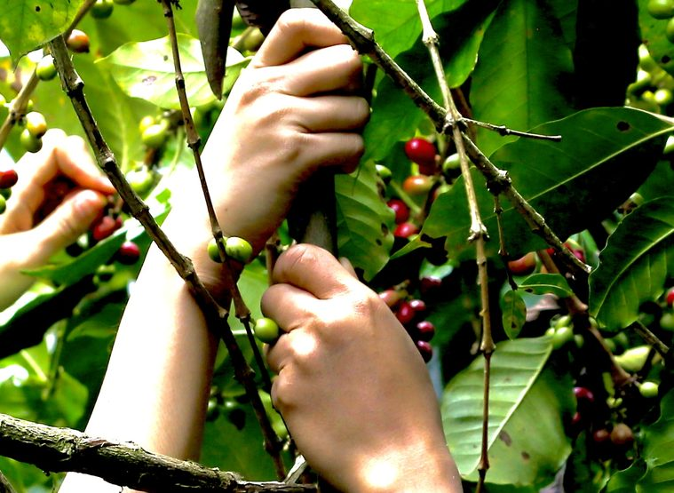
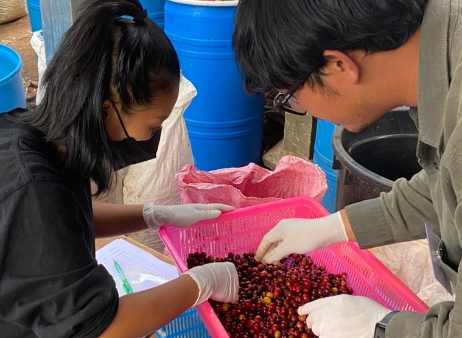
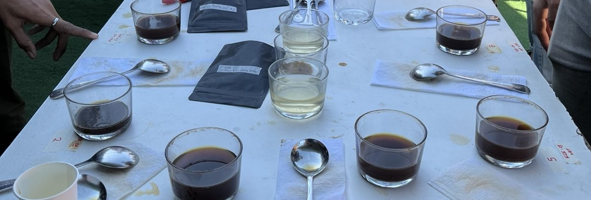

กลุ่ม 4–5 คน
4,290 ฿
ต่อคน
EXPERIENCE 02 · KHUN CHANG KIAN
ใช้เวลา 2 วัน 1 คืนกับผู้ปลูกกาแฟขุนช่างเคี่ยน เดินสำรวจสวน เรียนรู้สายพันธุ์ ลองเก็บและแปรรูปผลกาแฟ ก่อนคั่วและชิม 3 โพรเซส พร้อมพักโฮมสเตย์ในชุมชน
เลือกวันและขอร้านยืนยัน
จากระบบนิเวศและต้นกาแฟ สู่การคัดผลสุก การแปรรูป การบันทึกข้อมูล และการชิม เรียนรู้เหตุผลเบื้องหลังการตัดสินใจของผู้ผลิต ผ่านการลงมือทำและพูดคุยในพื้นที่จริง
พบต้นตัวอย่าง Red Bourbon, Kent, KCK-09 และ KCK-432 ตามที่ผู้ปลูกระบุ เปรียบเทียบใบ ทรงต้น และผลที่พบในช่วงเข้าร่วม



4,290 ฿
ต่อคน
3,890 ฿
ต่อคน
มัดจำ 50% หลังร้านยืนยันราคาและวันว่าง ยอดในหน้าขอราคาเป็นเพียงประมาณการ ยังไม่ใช่การยืนยันการจอง
เตรียมรองเท้าหุ้มส้นที่เดินสะดวก เสื้อผ้าสำหรับทำกิจกรรมในสวน เสื้อกันหนาว และอุปกรณ์กันฝนตามสภาพอากาศ
แจ้งข้อจำกัดการเดิน ความต้องการด้านอาหาร ภาษา และการเดินทางให้ร้านตรวจสอบก่อนจอง กิจกรรมและเวลาอาจปรับตามสภาพสวนและอากาศ
เลือกกิจกรรมที่ 2 และขอราคา